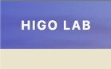

Internship
The University of Osaka, Japan
A research internship of about 10–12 weeks in software engineering at the Software Engineering Lab (Higo Lab), The University of Osaka.
← All internship opportunities
- University / institute
- The University of Osaka
- Country
- Japan
- Lab
- Software Engineering Lab (Higo Lab)
- Research area
- Software Engineering (mainly focusing on Empirical Software Engineering)
- Prior work
- Previous interns worked on the following topics:
- Code proficiency in Python and JavaScript
- Pythonic idioms and their usage in open-source projects
- Open-source security, such as GitHub SECURITY.md policies, vulnerability reporting mechanisms, and transitive dependency vulnerabilities
- Automated program repair and autorepairability
- Generative AI in software development
- Internship period
- Approx. 10–12 weeks (mid-May to end of July 2027)
- Positions
- 1
- Eligibility
- 2nd- or 3rd-year students of CP, CEDT, or the master’s program
- CGPA ≥ 3.20
- Commitment after internship
- A research paper submitted to a conference (4 to 10 pages)
- Scholarship
- N/A
- Accommodation
- Student accommodation will be reserved for the internship student (paid by the student)
- Contact
- Dr. Chaiyong Ragkhitwetsagul (chaiyong@cp.eng.chula.ac.th)
Key dates
- Application period
- Now – December 31, 2026
- Interview
- First two weeks of January 2027
- Result announcement
- Within 1 week after the host interview